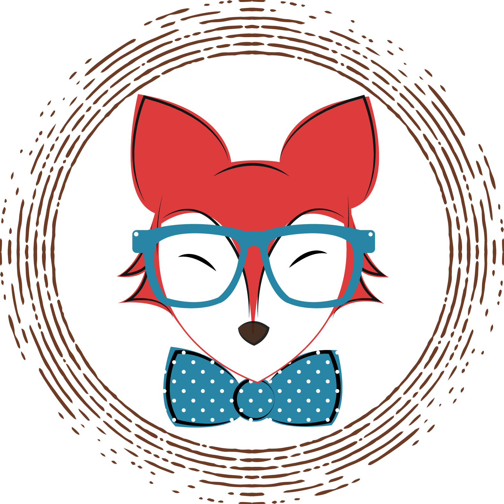
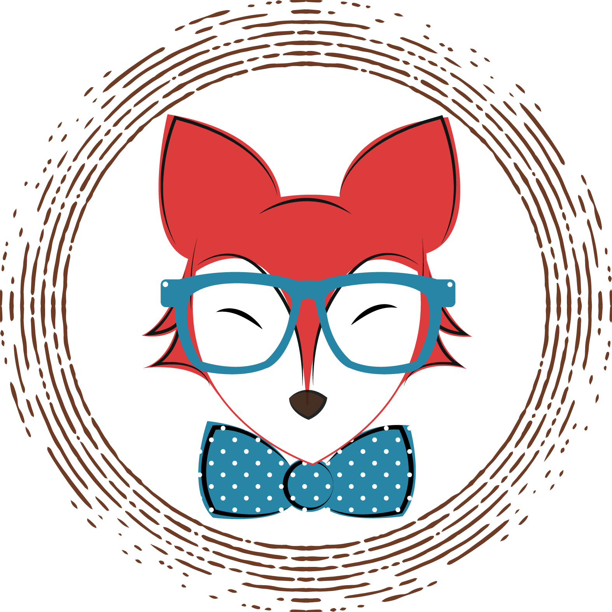

Dekoráció
Megmutatjuk hogyan, mivel érdemes díszítened a belső tereket, hogy a retro hatás harmonizáljon a modern világgal

Lakberendezés
Szemezgess vendégszerzőnk, Kiss Antónia cikkei közül, ha igazi retro atmoszférát szeretnél teremteni otthonodban
D.I.Y.
Tippek, ötletek ajándék- és dekorációs tárgyak készítéséhez